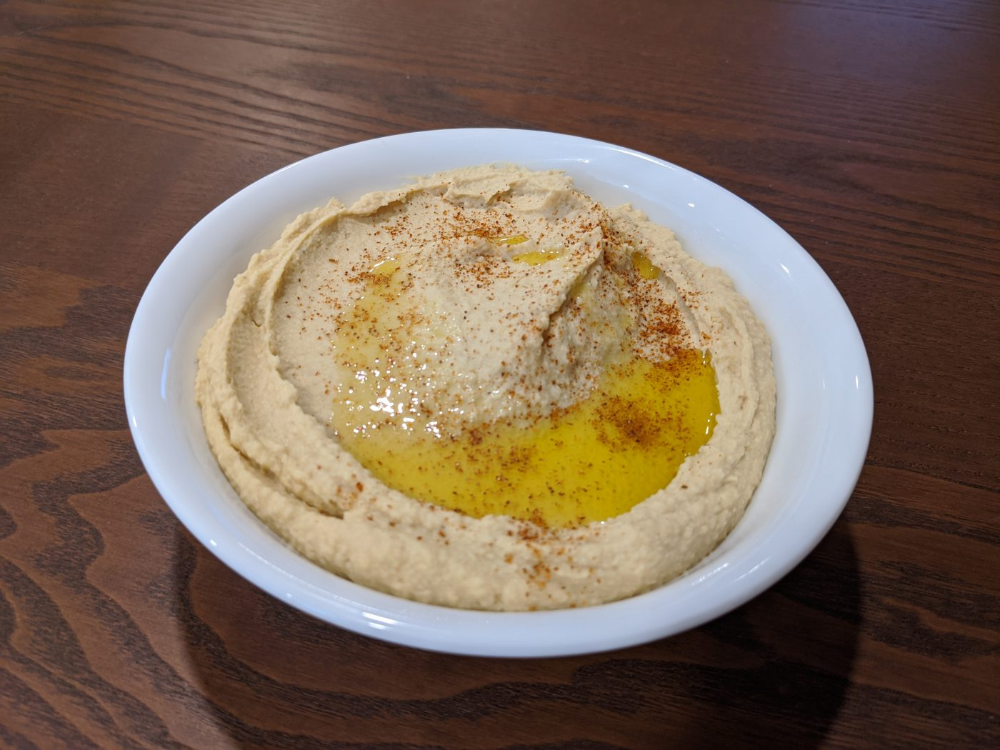

Basic Hummus
Ingredients
- 1 15-oz can of chickpeas
or 1 1/2 cups of cooked chickpeas - 1/4 cup lemon juice
Fresh-squeezed is better, but bottled works just fine - 1/4 cup tahini
- 1 garlic clove, minced
or more if you love garlic like I do - 2 tbsp extra-virgin olive oil, plus a drizzle for serving
- 1/2 tsp cumin
- 1/2 tsp salt
Instructions
-
In a food processor, add the tahini and lemon juice.
-
Process for 1 minute, scrape the sides, then process for another 30 seconds.
Don’t skimp on the time – having a nice, whipped base will ensure a smooth end texture. -
Add the olive oil, garlic, cumin, and salt.
-
Process for 30 seconds, scrape the sides, then process for another 30 seconds.
-
Drain and rinse your chickpeas.
I highly recommend storing the water from the can for later. The fancy name for chickpea water is “aquafaba”, and it’s used in some fun vegan recipes due to it’s ability to be whipped. -
Add half of your chickpeas and process for 1 minute. Scrape the sides of the bowl and add the other half. Process for another 1 to 2 minutes.
-
At this point, you can decide if you’d like to add some water to increase smoothness. Try adding 1 Tbsp at at time while the food processor is running.
-
Hummus is a very versatile dish, and a lot of the seasonings come down to taste. Take a moment here to do a taste test and add salt or other seasonings until the taste suits your preferences.
-
At this point, the food processor has probably made your hummus slightly warm. If you don’t like warm hummus, I recommend chilling it first.
Otherwise, serve with a dash of paprika and a drizzle of olive oil.